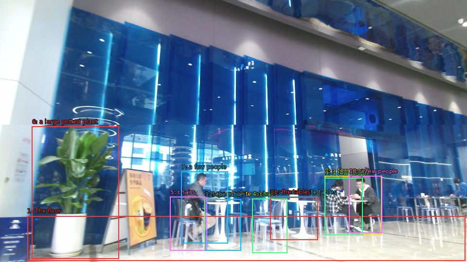

The image shows the interior of a modern restaurant or cafe. The walls are covered in blue glass panels, creating a futuristic and modern look. The floor is made of marble tiles, and there are several white tables and chairs scattered throughout the space. On the left side of the image, there is a large potted plant, and on the right side, there are a few people sitting at the tables, engaged in conversation. The overall atmosphere of the space is bright and airy.

Original · Caption raw · Grounding raw · Koordinate
Številke so lokalni ID regije. Dolge slikovne oznake so skrajšane; spodaj so celotne fraze. Napovedane regije se lahko prekrivajo ali opisujejo skupine.
| ID | Celotna fraza | bbox xyxy |
|---|---|---|
| 1 | The floor | [56.15999984741211, 445.2300109863281, 956.6399536132812, 537.5700073242188] |
| 2 | several white tables | [555.3599853515625, 405.8100280761719, 653.2799682617188, 494.9100341796875] |
| 3 | several white tables | [420.9599914550781, 410.1300048828125, 495.8399963378906, 516.510009765625] |
| 4 | chairs | [518.8800048828125, 409.59002685546875, 590.8800048828125, 521.9100341796875] |
| 5 | chairs | [349.91998291015625, 405.8100280761719, 425.7599792480469, 516.510009765625] |
| 6 | a large potted plant | [65.76000213623047, 260.5500183105469, 244.3199920654297, 533.25] |
| 7 | a few people | [372.9599914550781, 353.9700012207031, 468.0, 501.9300231933594] |
| 8 | a few people | [667.6799926757812, 362.07000732421875, 784.7999877929688, 484.1100158691406] |
| 9 | a few people | [667.6799926757812, 366.9300231933594, 745.4400024414062, 484.1100158691406] |
| 10 | a few people | [717.5999755859375, 362.6100158691406, 785.760009765625, 480.33001708984375] |
| 11 | the tables | [555.3599853515625, 406.3500061035156, 653.2799682617188, 494.9100341796875] |
| 12 | the tables | [421.91998291015625, 410.6700134277344, 495.8399963378906, 516.510009765625] |